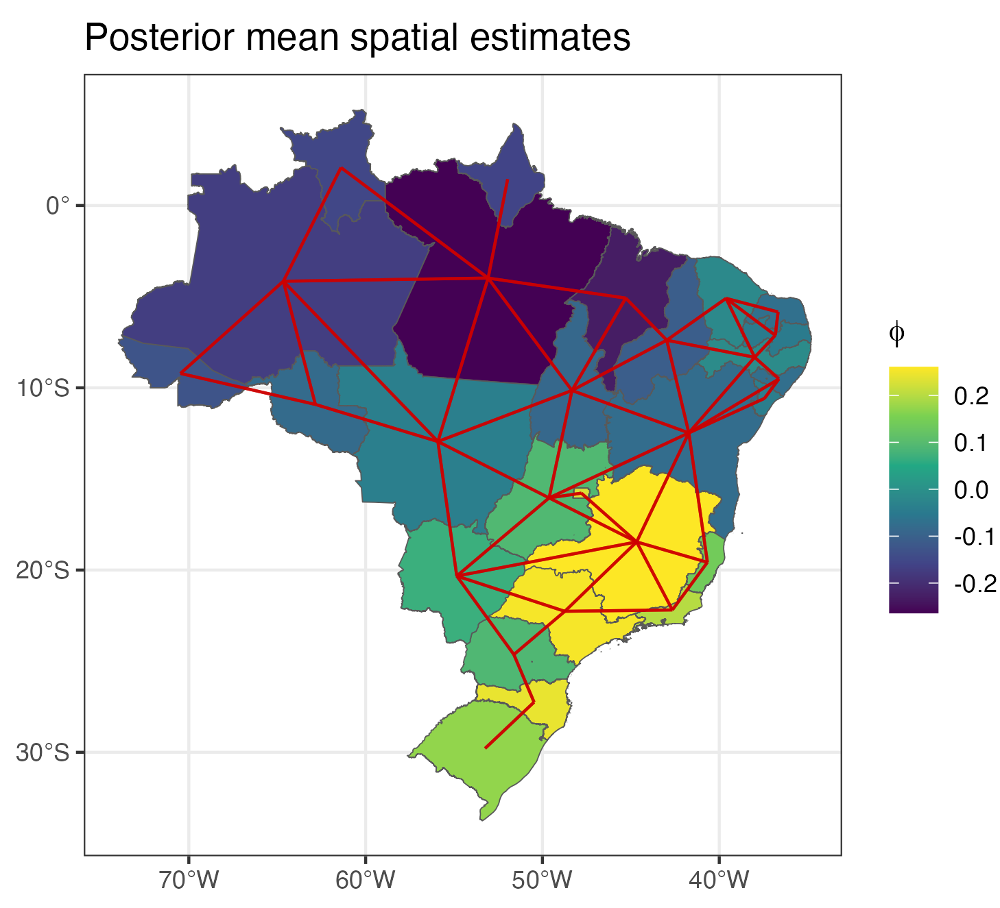

Leveraging INLA for estimating Bayesian latent variable models
STAT Workshop 2024, KAUST
Haziq Jamil ![]()
Assistant Professor in Statistics, Universiti Brunei Darussalam
Visiting Fellow, London School of Economics and Political Science
November 18, 2024
Latent variable models
In the social sciences, LVs are used to represent abstract constructs.

Personality traits

Quality of life
Social trust

Competencies
LVs interacting: Structural equation models
\[\begin{gather} y_i = \nu + \Lambda \eta_i + \epsilon_i \\ \epsilon_i \sim \operatorname{N}_p(0,\Theta) \\ \eta_i \sim \operatorname{N}_q(0,\Psi) \\ i=1,\dots,n \end{gather}\]
Bollen (1989)
\[\begin{gather} y_i = \nu + \Lambda \eta_i + \epsilon_i \\ \epsilon_i \sim \operatorname{N}_p(0,\Theta) \\ \eta_i \sim \operatorname{N}_q(0,\Psi) \\ i=1,\dots,n \end{gather}\]

Bollen (1989)
\[\begin{gather} y_i = \nu + \Lambda \eta_i + \epsilon_i \\ \epsilon_i \sim \operatorname{N}_p(0,\Theta) \\[0.4em] \eta_i = \alpha + B \eta_i + \zeta_i \\ \zeta_i \sim \operatorname{N}_q(0,\Psi) \\[0.4em] i=1,\dots,n \end{gather}\]
Bollen (1989)
\[\begin{gather} y_i = \nu + \Lambda \eta_i + \epsilon_i \\ \epsilon_i \sim \operatorname{N}_p(0,\Theta) \\[0.4em] \eta_i = \alpha + B \eta_i + \zeta_i \\ \zeta_i \sim \operatorname{N}_q(0,\Psi) \\[0.4em] i=1,\dots,n \end{gather}\]
A quick comparison

Still working out the kinks, but initial results are promising!
Inference on random effects
Between-country variability of construct “Obligation to obey the police”

Brazilian ENEM data set


- If latent traits are of interest, INLA provides this under
$summary.random.
References

Bartholomew, David J., M. Knott, and Irini Moustaki. 2011. Latent Variable Models and Factor Analysis: A Unified Approach. 3rd ed. Wiley Series in Probability and Statistics. Chichester, West Sussex: Wiley.
Besag, Julian, Jeremy York, and Annie Mollié. 1991. “Bayesian Image Restoration, with Two Applications in Spatial Statistics.” Annals of the Institute of Statistical Mathematics 43: 1–20.
Bollen, Kenneth A. 1989. Structural Equations with Latent Variables. Structural Equations with Latent Variables. Oxford, England: John Wiley & Sons. https://doi.org/10.1002/9781118619179.
Carpenter, Bob, Andrew Gelman, Matthew D. Hoffman, Daniel Lee, Ben Goodrich, Michael Betancourt, Marcus Brubaker, Jiqiang Guo, Peter Li, and Allen Riddell. 2017. “Stan : A Probabilistic Programming Language.” Journal of Statistical Software 76 (1). https://doi.org/10.18637/jss.v076.i01.
Congdon, Peter. 2014. Applied Bayesian Modelling. 1st ed. Wiley Series in Probability and Statistics. Wiley. https://doi.org/10.1002/9781118895047.
European Social Survey European Research Infrastructure (ESS ERIC). 2023. “ESS5 - Integrated File, Edition 3.5 (Austria Not Included).” Sikt - Norwegian Agency for Shared Services in Education and Research. https://doi.org/10.21338/ESS5E03_5.
Holzinger, K. J., and F. Swineford. 1939. “A Study in Factor Analysis: The Stability of a Bi-Factor Solution.” Supplementary Educational Monographs 48: xi + 91–91.
Jackson, Jonathan, Ben Bradford, Mike Hough, Jouni Kuha, Sally Stares, Sally Widdop, Rory Fitzgerald, Maria Yordanova, and Todor Galev. 2011. “Developing European Indicators of Trust in Justice.” European Journal of Criminology 8 (4): 267–85. https://doi.org/10.1177/1477370811411458.
Jackson, Jonathan, Mike Hough, Ben Bradford, Tia Pooler, Katrin Hohl, and Jouni Kuha. 2011. “Trust in Justice: Topline Results from the Round 5 of the European Social Survey.” {{SSRN Scholarly Paper}}. Rochester, NY.
Lee, Sik-Yum. 2007. Structural Equation Modeling: A Bayesian Approach. Wiley Series in Probability and Statistics. Chichester, England ; Hoboken, NJ: Wiley.
Merkle, Edgar C., Ellen Fitzsimmons, James Uanhoro, and Ben Goodrich. 2021. “Efficient Bayesian Structural Equation Modeling in Stan.” Journal of Statistical Software 100 (November): 1–22. https://doi.org/10.18637/jss.v100.i06.
Merkle, Edgar C., and Yves Rosseel. 2018. “Blavaan: Bayesian Structural Equation Models via Parameter Expansion.” Journal of Statistical Software 85 (June): 1–30. https://doi.org/10.18637/jss.v085.i04.
Muthén, Bengt O., and Albert Satorra. 1995. “Complex Sample Data in Structural Equation Modeling.” Sociological Methodology 25: 267–316. https://doi.org/10.2307/271070.
Rosseel, Yves. 2012. “lavaan: An R Package for Structural Equation Modeling.” Journal of Statistical Software 48 (2). https://doi.org/10.18637/jss.v048.i02.
Rue, Håvard, Sara Martino, and Nicolas Chopin. 2009. “Approximate Bayesian Inference for Latent Gaussian Models by Using Integrated Nested Laplace Approximations.” Journal of the Royal Statistical Society Series B: Statistical Methodology 71 (2): 319–92. https://doi.org/10.1111/j.1467-9868.2008.00700.x.